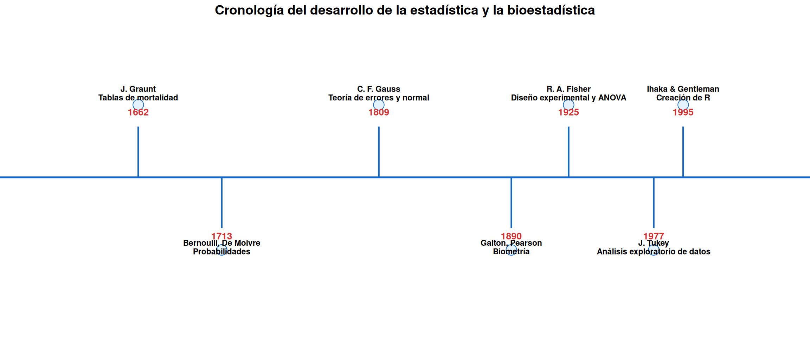
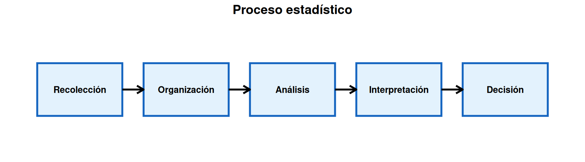
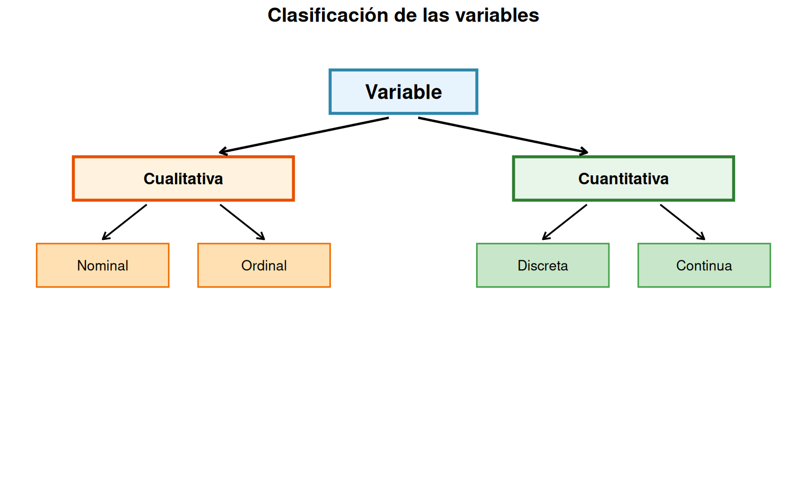
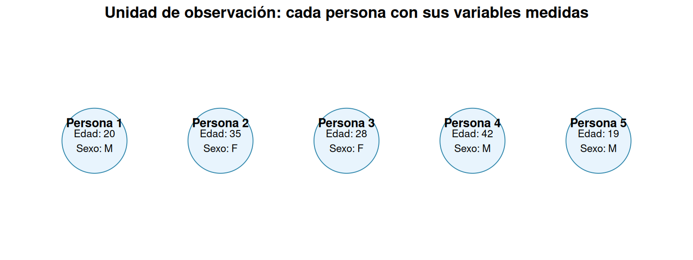
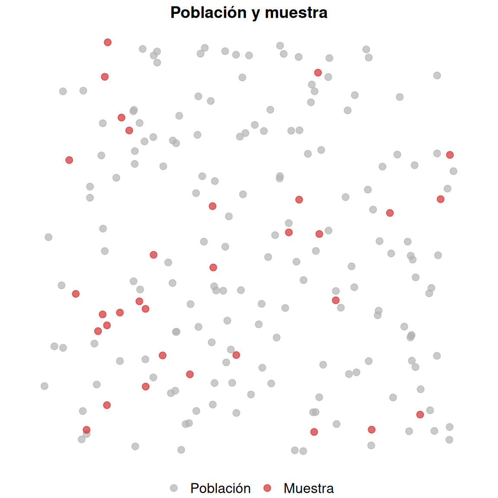
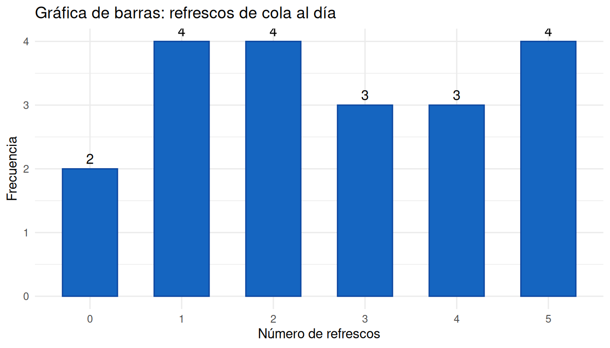
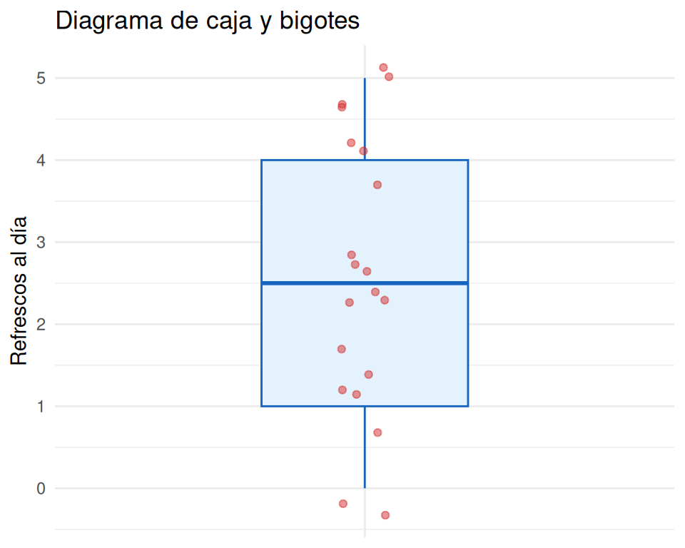
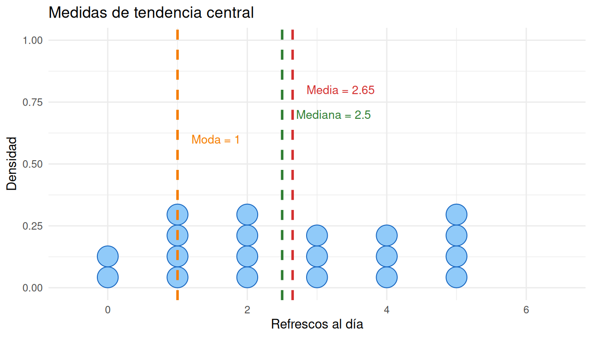
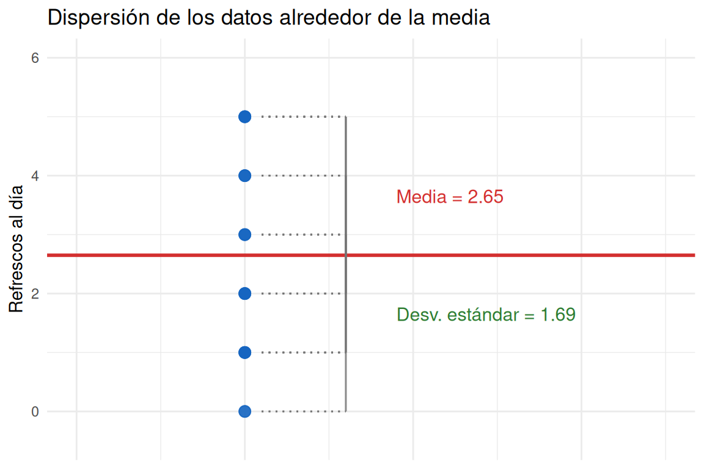
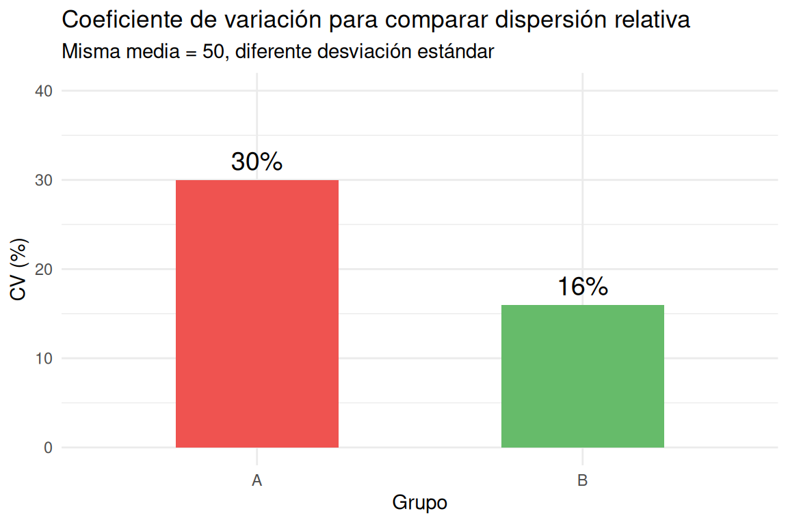

2 Julio 2026
2.1 Temas primer parcial
2.1.2 Conceptos introductorios
2.1.2.1 1. Origen histórico de la estadística y la bioestadística
La palabra estadística proviene del latín status, que significa estado. En sus orígenes, la estadística se dedicaba a recolectar y resumir información sobre el estado: población, recursos, tierras, producción, entre otros. Por eso, aún hoy muchas personas la asocian con datos, tablas y gráficas.
La disciplina moderna nació de la convergencia de dos corrientes históricas: la estadística descriptiva del Estado (censo, demografía, recuento) y el cálculo de probabilidades (originado en los juegos de azar).
La bioestadística —llamada inicialmente biometría— surge a finales del siglo XIX como una especialización científica empujada por la revolución en las ciencias de la vida. Científicos británicos como Francis Galton y Karl Pearson se dieron cuenta de que las teorías biológicas de la evolución de Darwin y la herencia de caracteres cuantitativos no podían modelarse con matemáticas deterministas, sino que requerían un marco matemático para estudiar la distribución, la variación, la correlación y la regresión. Posteriormente, Ronald A. Fisher formalizó el diseño experimental, la genética de poblaciones y el análisis de varianza (ANOVA), herramientas indispensables para experimentos agronómicos, biológicos y médicos.
La bioestadística es, entonces, la aplicación de métodos estadísticos al diseño, recopilación, análisis e interpretación de datos empíricos de las ciencias de la vida, incluyendo biología, ecología, medicina, agronomía y salud pública. Su objetivo es modelar la incertidumbre para comprender los sistemas biológicos bajo una estructura probabilística sólida.
El siguiente diagrama muestra algunos hitos fundamentales en la historia de la estadística y la bioestadística:

2.1.2.2 2. ¿Qué es la estadística?
La estadística puede definirse como el arte de tomar decisiones frente a la incertidumbre. Es la disciplina que ofrece un conjunto de técnicas para diseñar el proceso de recolectar, organizar, presentar, analizar e interpretar datos, con el fin de obtener conclusiones útiles y apoyar la toma de decisiones.
El siguiente diagrama resume las etapas principales del proceso estadístico:

2.1.2.3 3. ¿Qué es una variable?
Una variable es una característica o rasgo que se mide u observa en un grupo de elementos, y que puede tomar diferentes valores. Esos valores pueden ser numéricos o de texto.
Por ejemplo, en un grupo de pacientes podemos medir: edad, peso, sexo, tipo de sangre o nivel de dolor. Cada una de estas características es una variable.

2.1.2.4 4. Variable categórica o cualitativa
Una variable es categórica o cualitativa cuando sus valores no se pueden asociar naturalmente a números, es decir, no tiene sentido realizar operaciones aritméticas con ellos.
Se clasifican en:
- Nominales: no tienen un orden natural. Ejemplos: sexo, color, nacionalidad, fumador sí/no.
- Ordinales: sí se pueden ordenar de forma natural. Ejemplos: nivel de dolor leve-moderado-severo, grado de felicidad, mejoría tras un tratamiento.
2.1.2.5 5. Variable cuantitativa
Una variable es cuantitativa cuando sus valores son numéricos y se pueden realizar operaciones aritméticas. Se dividen en:
- Discretas: toman valores enteros, generalmente resultado de contar. Ejemplo: número de hijos, número de pacientes.
- Continuas: pueden tomar cualquier valor dentro de un intervalo de los números reales. Ejemplo: estatura, peso, temperatura.
2.1.2.6 6. ¿Qué es un dato?
Un dato es el resultado de observar o medir una característica sobre un elemento del grupo de interés. Puede corresponder a una sola variable o a varias variables simultáneamente.
En plural, los datos o el conjunto de datos hacen referencia a todas las observaciones realizadas sobre cada uno de los elementos estudiados.
2.1.2.7 7. ¿Qué es una unidad de observación?
La unidad de observación es cada elemento, persona, objeto o entidad sobre la cual se miden una o más variables. Si estudiamos el rendimiento académico de un curso, cada estudiante es una unidad de observación.

2.1.2.8 8. ¿Qué es una población?
Una población es la colección completa de todas las unidades de observación que se desean estudiar. Está definida por condiciones físicas, biológicas, espaciales o temporales establecidas por los objetivos de la investigación.
En muchas ocasiones las poblaciones son muy grandes o incluso infinitas, lo que hace necesario estudiar solo una parte de ellas.

2.1.2.9 9. ¿Qué es una muestra?
Una muestra es un subconjunto de elementos seleccionados de la población. Se estudia para generalizar los resultados a toda la población.
Para que una muestra sea confiable debe cumplir dos condiciones:
- Ser representativa de toda la población.
- Ser tomada al azar, de modo que todos los elementos tengan la misma oportunidad de ser incluidos.
2.1.3 Conceptos de estadística descriptiva
2.1.3.1 1. ¿Qué es la estadística descriptiva?
La estadística descriptiva es el conjunto de técnicas que nos permiten organizar, resumir y describir un conjunto de datos utilizando métodos numéricos y gráficos. Su objetivo principal es presentar la información de forma clara y comprensible, sin necesidad de hacer inferencias más allá de los datos observados.
Entre sus herramientas principales se encuentran las tablas de frecuencia, las gráficas, las medidas de tendencia central y las medidas de dispersión.
2.1.3.2 2. Tablas de frecuencia
Las tablas de frecuencia resumen los datos mostrando cuántas veces aparece cada valor o categoría. Los tres tipos principales son:
- Frecuencia absoluta: número de veces que aparece cada valor.
- Frecuencia relativa: proporción respecto al total.
- Frecuencia acumulada: suma de las frecuencias hasta cierto punto.
A continuación se muestra la tabla de frecuencias para el número de refrescos de cola que beben al día 20 jóvenes encuestados:
| Valor | Frecuencia | Frec. Relativa | Frec. Acumulada | Frec. Rel. Acum. |
|---|---|---|---|---|
| 0 | 2 | 0.10 | 2 | 0.10 |
| 1 | 4 | 0.20 | 6 | 0.30 |
| 2 | 4 | 0.20 | 10 | 0.50 |
| 3 | 3 | 0.15 | 13 | 0.65 |
| 4 | 3 | 0.15 | 16 | 0.80 |
| 5 | 4 | 0.20 | 20 | 1.00 |
2.1.3.3 3. Gráfica de barras
La gráfica de barras es una representación visual donde cada categoría o valor tiene una barra cuya altura representa su frecuencia. Es muy útil para variables cualitativas o discretas, ya que permite comparar rápidamente las cantidades entre diferentes categorías.

2.1.3.4 4. Gráfica caja y bigotes
El diagrama de caja y bigotes, o boxplot, resume una variable numérica usando cinco valores: el mínimo, el primer cuartil, la mediana, el tercer cuartil y el máximo. Además, permite identificar visualmente valores atípicos que se alejan del resto de los datos.

2.1.3.5 5. Media, mediana y moda
Son las tres medidas de tendencia central más comunes:
- Media: promedio aritmético de los datos.
- Mediana: valor central cuando los datos están ordenados.
- Moda: valor que más se repite.
Cada una describe el centro de los datos de una forma diferente y es útil según la situación. En la siguiente gráfica se muestran las tres medidas para los datos de refrescos al día.

2.1.3.6 6. Varianza y desviación estándar
La varianza mide el promedio de las distancias al cuadrado entre cada dato y la media. La desviación estándar es la raíz cuadrada de la varianza y se expresa en las mismas unidades de la variable.
Ambas miden la dispersión o variabilidad de los datos: entre mayor sean, más dispersos están los valores alrededor de la media.

2.1.3.7 7. Coeficiente de variación
El coeficiente de variación es una medida relativa de dispersión que se obtiene dividiendo la desviación estándar entre la media y expresándola como porcentaje. Es muy útil para comparar la variabilidad de dos o más conjuntos de datos que tienen diferentes unidades o escalas.
En el siguiente ejemplo, ambos grupos tienen la misma media (50), pero el grupo A tiene mayor dispersión relativa que el grupo B.

2.1.3.8 8. Práctica de código R en línea
Para poner en práctica lo aprendido, puedes escribir y ejecutar código R directamente en cualquiera de los siguientes compiladores en línea. Haz clic en el botón que prefieras para abrirlo en una nueva ventana emergente.
Una vez abierta la ventana, podrás copiar los ejemplos de código vistos en esta unidad y experimentar con tablas de frecuencia, gráficas y medidas descriptivas.